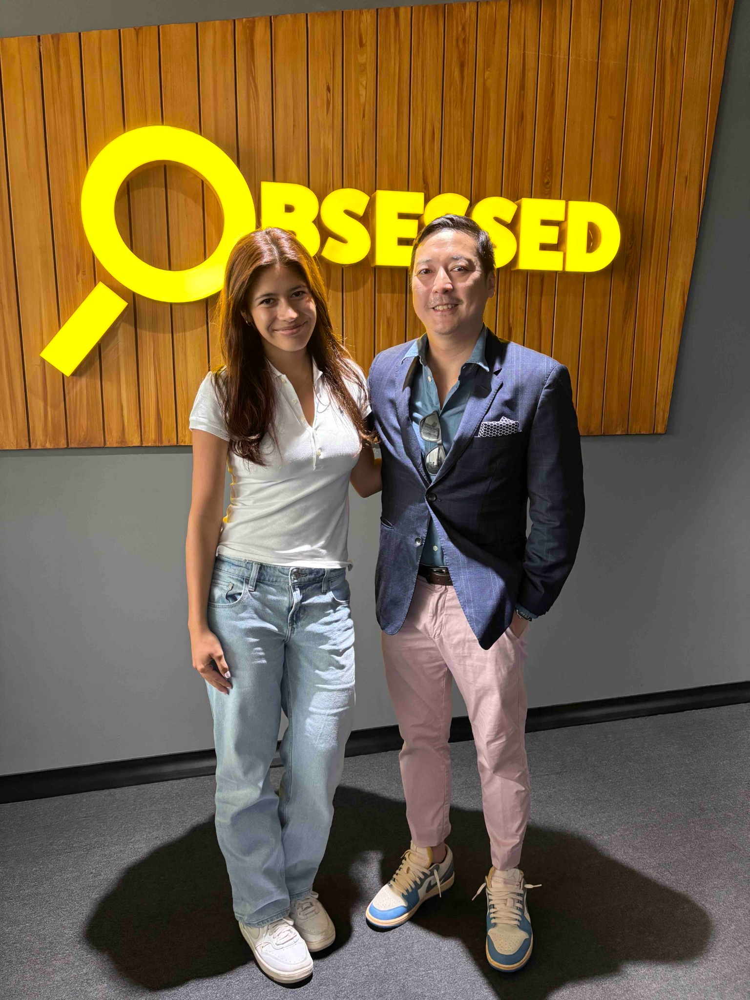

Analytics • Brand Strategy • Business Growth
Leveraging customer engagement insights, executive reporting, and market analysis to support growth initiatives and strategic decision-making across regional operations.

During my internship with Timezone Entertainment Group, I analyzed customer engagement trends and business performance data across regional locations. My work focused on identifying opportunities for growth, understanding customer behavior, and helping communicate findings through executive-facing reports and presentations.
One of the most valuable aspects of this experience was learning how to translate large amounts of information into recommendations that decision-makers could actually use. Rather than simply reporting numbers, I focused on identifying trends, understanding why they mattered, and presenting insights in a way that supported strategic conversations.
This work strengthened my ability to combine analytical thinking with communication skills—connecting customer engagement data, market observations, and operational performance into clear and actionable business insights.
This experience helped develop the exact skills that continue to interest me today: researching information, identifying meaningful patterns, communicating insights clearly, and supporting decisions through evidence-based recommendations. It reinforced how strong analysis becomes most valuable when it is paired with effective storytelling and communication.